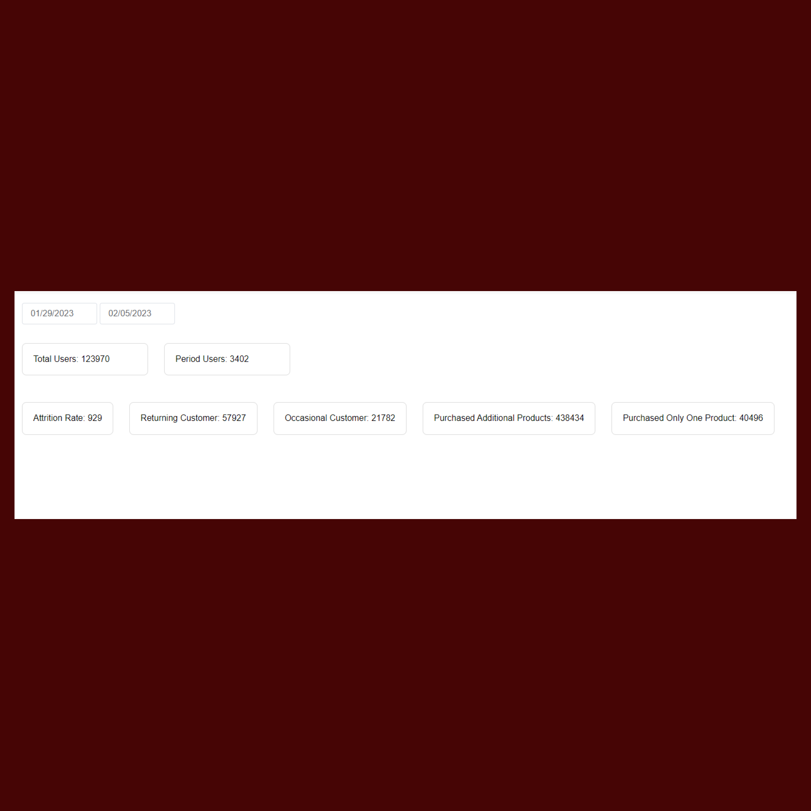
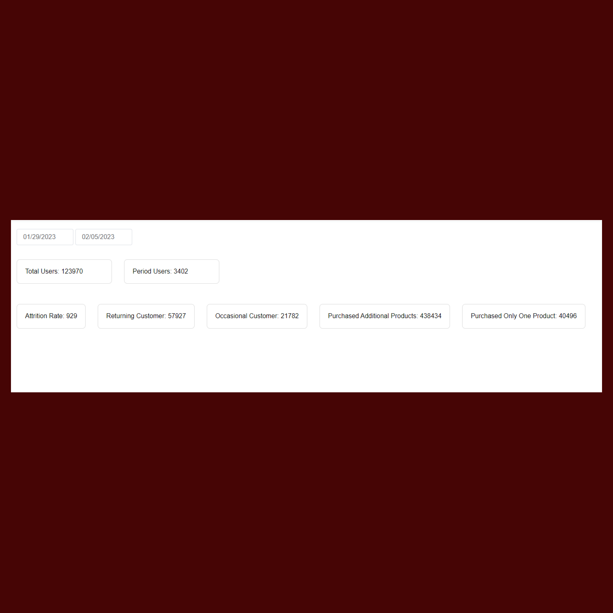

DB Reports Sales
I developed a program that collects and processes all sales data from the server to generate a range of reports for a more efficient and informed decision-making process. The reports generated by the program include User Trends, Trending Sales, Average Basket, Customer Traffic, Cashier Information in Sales, and User Missing Fields. The program provides valuable insights into the performance and behavior of the sales system, allowing for more informed and strategic business decisions. The comprehensive nature of the data gathered and analyzed by the program is a valuable asset for the company.